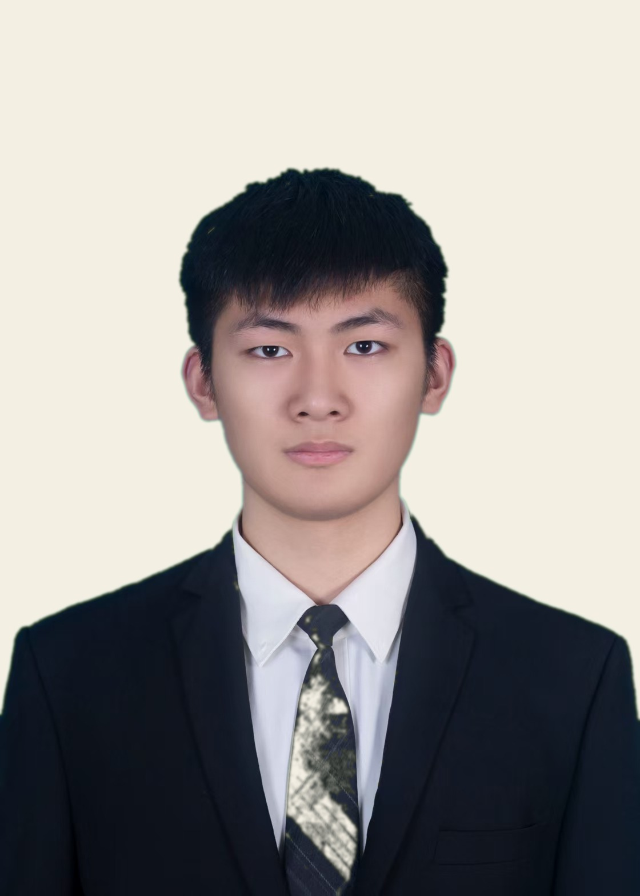

我是金杰,哈尔滨理工大学通信工程专业的新生。
和大家一样,我也是刚刚进入大学,正在慢慢适应新的生活。新环境、新同学、新的课业节奏,都在一点点熟悉当中。
做这个网页,是想认真地把自己介绍给大家。也借这个机会说清楚:我想竞选团支部书记,不是为了什么名头,而是真的愿意为班里做点事情。
说三个很简单的理由。
班里的事情说大不大,但总得有人愿意去做。通知、活动、协调这些,我愿意多走一步。
大学事情又多又杂,通知容易漏,时间容易忘。如果有人帮忙理一理,大家都能轻松一点。我想试着把事情理清楚。
我没什么经验,也不敢说样样都行。但该我做的事我不会糊弄,做不好就改,不装没事。
不敢承诺什么大事,但这些小事我可以试着做好:
事情大致会这样走:
点一下就行,看看大家都在想什么。
不写口号,只写几句实在的。